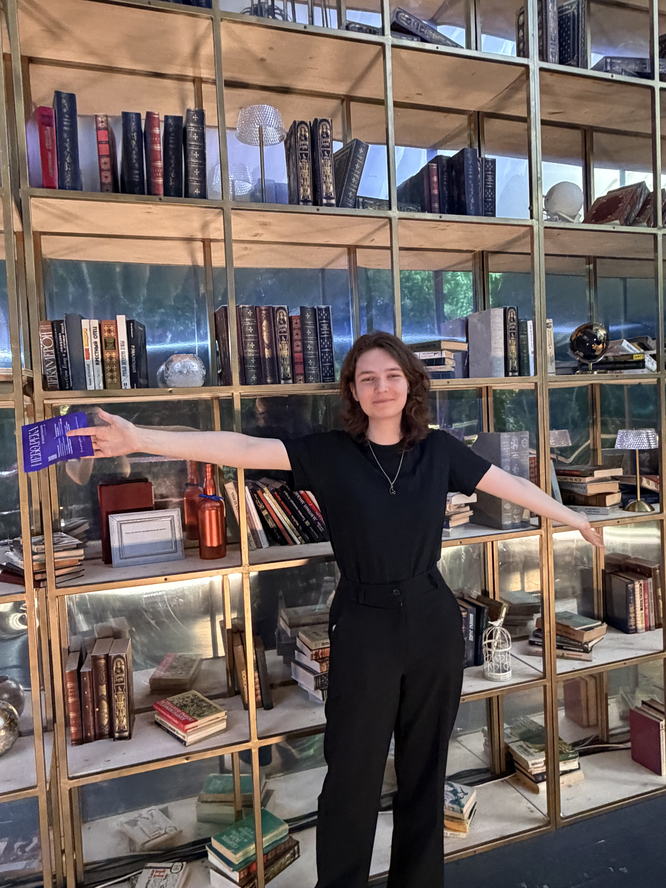

Небо.Река
Одно из самых ярких воспоминаний лета — поход с подругами в Дом экспериментального искусства на проспекте Машерова, 15/1.
«Небо.Река» — это не просто выставка, а целый мир: 2300 м² бетона, 500 тонн воды, 10-метровый водопад, живые проекции и более 20 интерактивных инсталляций, которые реагируют на твоё присутствие — на шаг, взгляд и даже дыхание.
Мы катались на круглых лодках по воде, слушали говорящий колодец, качались на гигантских качелях и просто молчали, глядя на планету, парящую над рекой. Закаты и рассветы здесь сменяют друг друга каждые 90 минут — и это то самое чувство, когда искусство становится воздухом.

